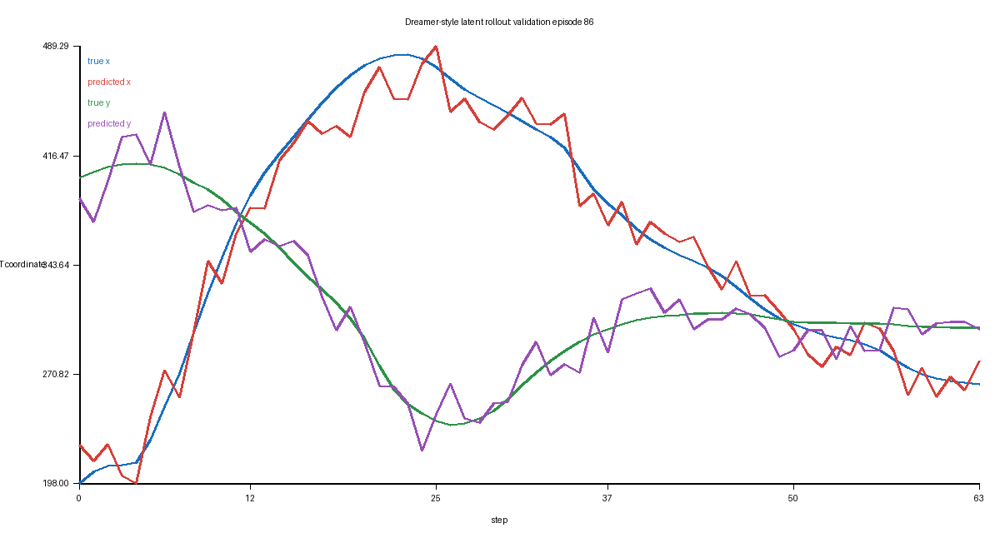

Posterior
训练时有观测，用它把 o_t 压进 latent。
posterior q(z_t | o_t, h_t) # 看到真实观测时编码
prior p(z_t | h_t) # 想象时预测
h_t = GRU(z_t, a_t, h_t)
decoder z_t → o_t / r_t / done_t
KL q ‖ p训练时有观测，用它把 o_t 压进 latent。
想象时没有未来观测，只能靠 recurrent state 预测 latent。
携带历史信息，形成 h_t。
把 latent 还原成状态/奖励/结束，保证 latent 不塌缩成无信息向量。
约束 prior 靠近 posterior，同时防止早期过度匹配。
| 项 | 值 |
|---|---|
| hidden | 128 |
| latent | 16-D Gaussian |
| sequence length | 32 |
| train/val windows | 15,483 / 3,781 |
| val loss | 0.25721 |
| val obs MSE | 0.04346 |
| 64-step rollout MSE | 212.97 px/coordinate |
